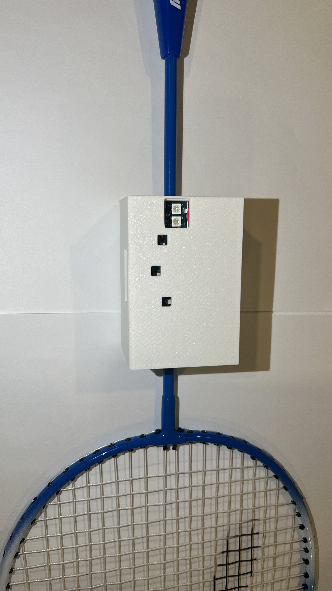

üì∑ Project Photos

Team 31 – Solo
Members: Yuhe Zhang, Zihao Cai
This is a smart badminton training device embedded in the racket. It automatically counts swings and detects successful hits using onboard motion sensors. For each hit, the LED lights up and a buzzer sounds to motivate users during practice.
The system uses the SAMW25 Xplained Pro board running FreeRTOS, and the MPU6050 IMU to detect swings and hits. The device supports two modes (training and competition), with visual (RGB LED) and audio (buzzer) feedback. It also uploads hit data in real time to a Node-RED dashboard via Wi-Fi.
We overcame hardware issues with the custom PCB by switching to the SAMW25 board. FreeRTOS tasks were used for modular control (Sensor, Button, LED, Buzzer, Control). Hit detection was improved with filtering and timing thresholds. All feedback was verified with debug prints and oscilloscope testing.
We learned how to manage asynchronous tasks, smooth sensor noise, and build robust feedback systems. Future improvements may include OTA firmware updates and an OLED display.